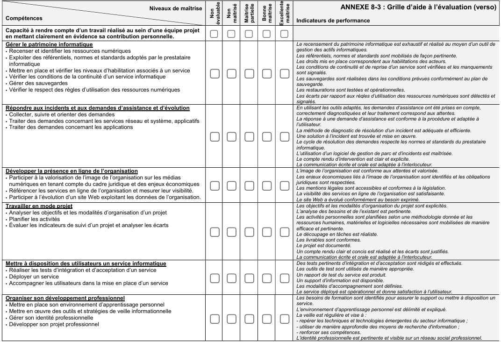

Gérer le patrimoine informatique
- Recenser et identifier les ressources numériques
- Gérer les habilitations
- Vérifier la continuité d’un service
- Gérer les sauvegardes
Cette page présente les compétences que je dois valider dans le cadre de mon portfolio professionnel.
